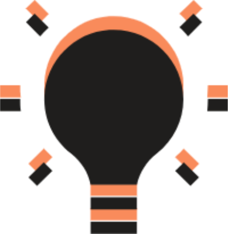

Conhecer as consequências do efeito estufa, que citamos há pouco, ajuda a entender a grande importância da energia sustentável para o planeta.Porque elas atingem a todos nós, ao mesmo tempo em que geram impactos na natureza, sobre os demais seres vivos.
No Quênia, uma nova lei exige que as pessoas usem energia solar para aquecer grande quantidades de água. Esta empresa queniana é uma das 270 companhias apoiadas pelo Programa de Tecnologia Climática do Banco Mundial.

O Sol que nos ilumina todo o dia é uma das fontes de energia sustentável mais conhecidas. Por meio de painéis com tecnologia específica, a luz é captada e convertida em energia térmica ou elétrica.
Os ventos também são uma excelente fonte de energia sustentável. Captados por enormes moinhos, o movimento gerado por eles se transforma em energia elétrica totalmente limpa.

O vai e vem do mar também pode ser aproveitado. Menos conhecida, a energia maremotriz capta o movimento das águas do oceano e o converte em eletricidade com o auxílio de turbinas e barragens.
A energia geotérmica consiste no aproveitamento do calor oriundo do interior do planeta. Dependendo da região do globo, por meio de escavações não tão profundas, é possível usufruir das altas temperaturas emitidas pela Terra, aquecendo a água que movimentará turbinas e gerará a energia.
Veja o motivo de se usar energia sustentável


Matheus Santos
Prazer, me chamo Matheus tenho 18 anos, trabalho na Detroit Brazil(estaleiro) Na area de almoxarifado. Estou no 3º ano, curto muito jogar bola, eu sou muito esforçado e pretendo fazer faculdade de Relaçoes Internacionais ou Ciência da computação.